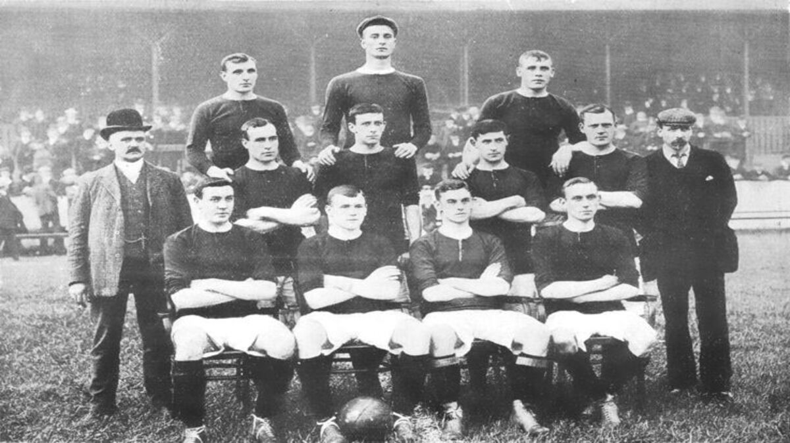
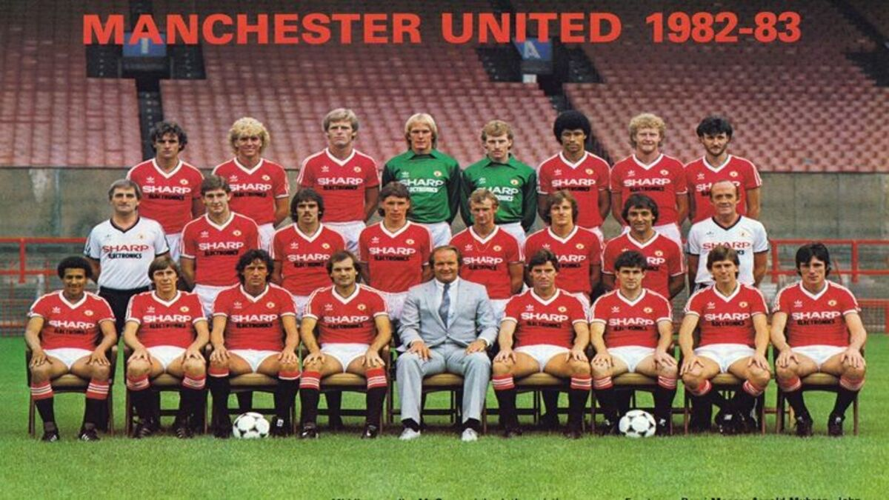
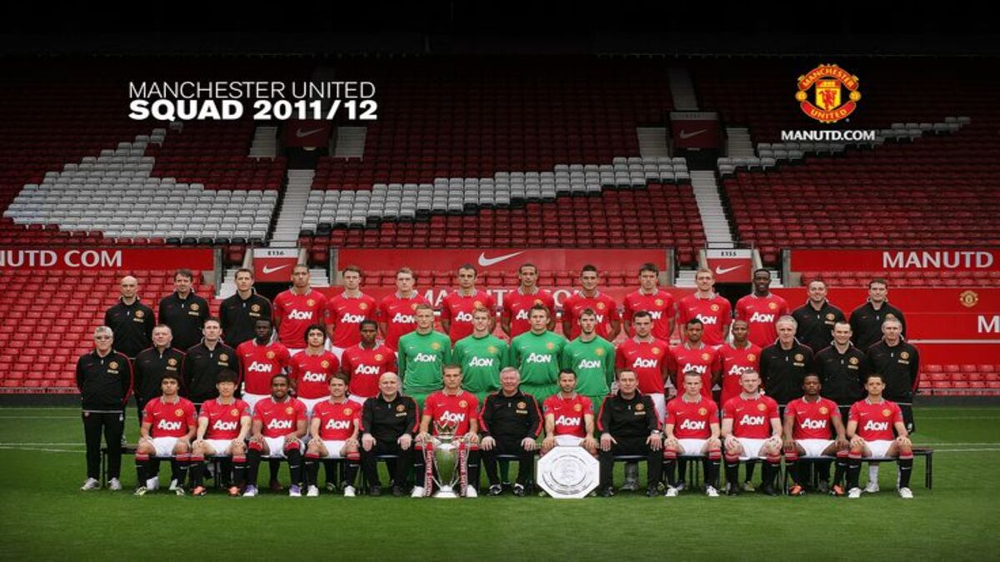
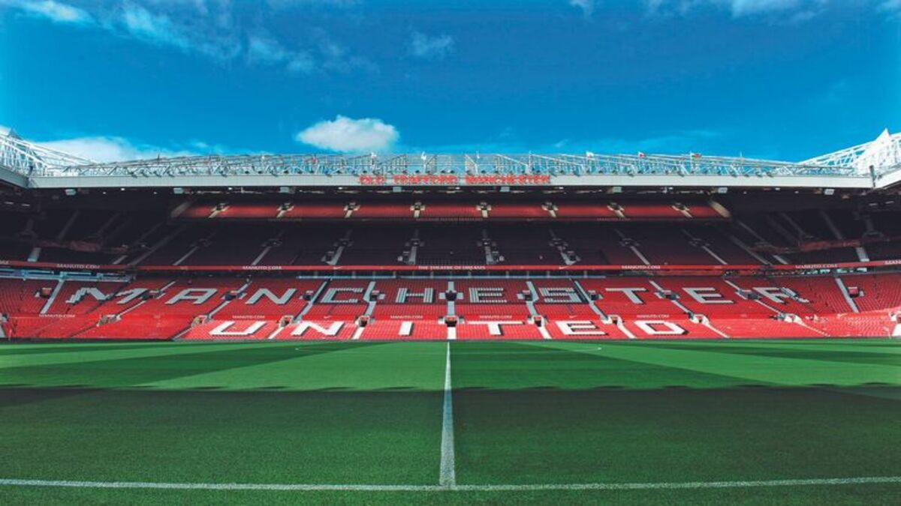

HISTORIA
El Manchester United Football Club, conocido como Manchester United es un club de fútbol profesional inglés de la ciudad de Mánchester, Inglaterra, que compite en la Premier League y disputa sus partidos como local en el estadio Old Trafford. Fue fundado el 5 de marzo de 1878 bajo el nombre de Newton Heath LYR Football Club y se incorporó a la First Division en 1892.
Después de estar cerca de la bancarrota en 1902, J. H. Davies tomó las riendas del club y cambió su nombre por el actual. El equipo gozó de un éxito sin precedentes tras nombrar a Matt Busby como entrenador del equipo y ganar la liga en 1956 y 1957.
Somos considerados también como uno de los clubes deportivos más populares del mundo. Desde 1994 se mantiene como el club con la asistencia más alta en sus partidos de liga, con un promedio de más de 14 mil aficionados por juego.
ESTADIO
Old Trafford esta ubicado en Gran Mánchester, en la región noroeste de Inglaterra. Con una capacidad de 76.000, es el estadio de fútbol de clubes más grande en el Reino Unido. Old Trafford ha sido el hogar del United desde 1910. Apodado "El teatro de los sueños". El estadio sufrió varias expansiones en los años 1990 y 2000, incluida la adición de niveles adicionales a las gradas Norte, Oeste y Este, casi devolviendo el estadio a su capacidad original de 80.000.
TROFEOS
El primer trofeo fue la Manchester Cup, la cual ganó como Newton Heath en 1886. En 1908, el equipo obtuvo su primer título de liga y, al año siguiente, se hizo acreedor a la Copa de Inglaterra por primera vez. Actualmente, el club es el más laureado de la Premier League, con 20 trofeos, además de ser el primer equipo inglés en ganar la Copa de Europa y el único de Inglaterra en ser campeón de la Copa Intercontinental y el primero de la Mundial de Clubes.